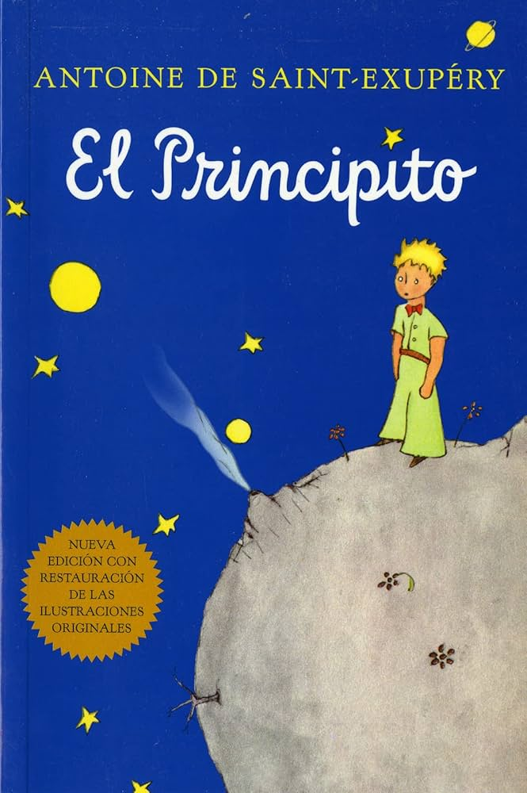
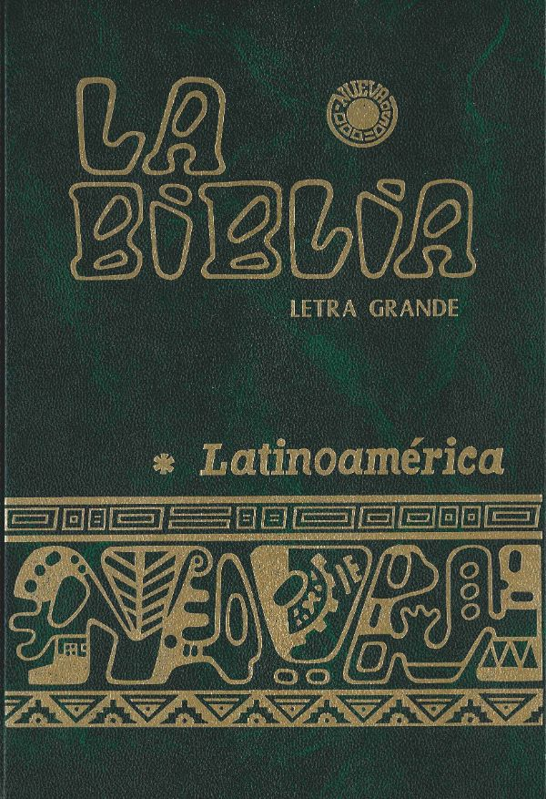
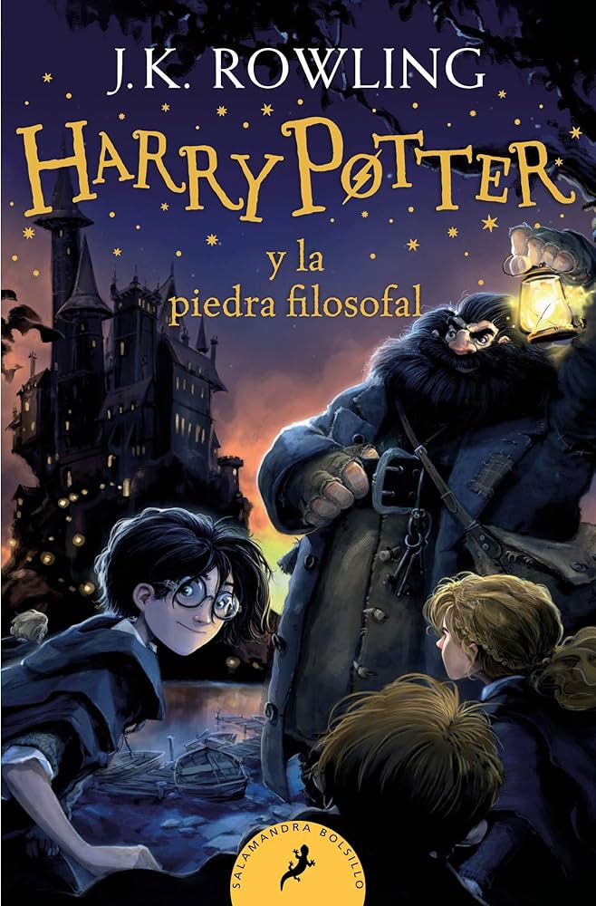
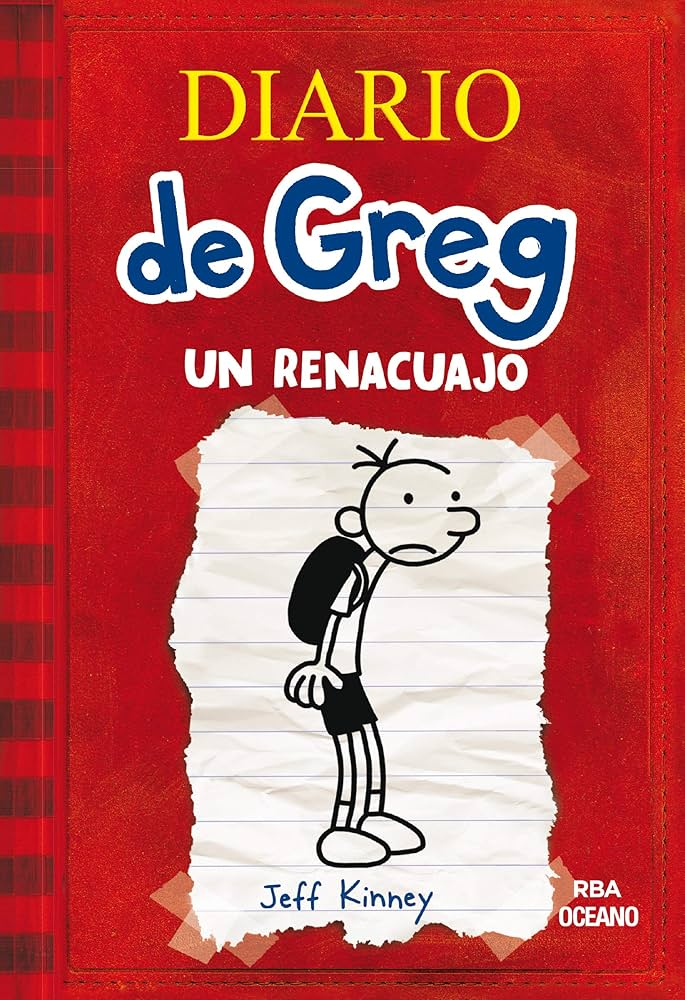

Es una novela que narra las aventuras de un hidalgo llamado Alonso Quijano,quien tras leer muchos libros de caballerias, decide convertirse en caballero andante bajo el nombre de Don Quijote.Acompañado por su fiel escudero Sancho Panza, viven , multiples locuras y fantasias

El Principito (1943) es una fábula filosófica narrada por un aviador que cae en el desierto del Sahara y conoce a un niño misterioso: el Principito, quien viene de un asteroide diminuto llamado B-612.

Texto sagrado de la religión cristiana que recopila una serie de libros que incluyen relatos, leyes, profecías, poesías y enseñanzas religiosas. Está dividida en Antiguo y Nuevo Testamento y es fundamental para la fe y moral cristiana.

es una novela juvenil de romance y drama que narra la historia de Hasley Weigel y Luke Howland, dos adolescentes con mundos opuestos. Hasley, optimista, se acerca a Luke, un joven sumido en la oscuridad, las drogas y la depresión por traumas familiares. Juntos crean un "boulevard" de amor, pero la trama concluye con la trágica muerte de Luke

rimer libro de la saga escrita por J.K. Rowling. Narra la historia de Harry Potter, un niño huérfano que descubre que es un mago y es aceptado en el Colegio Hogwarts de Magia y Hechicería. Allí hace amigos y enemigos, y descubre un misterio relacionado con una piedra mágica que otorga inmortalidad.

Serie de libros escritos por Jeff Kinney. Son diarios ficticios del personaje Greg Heffley, que narra con humor y dibujos sus aventuras y desventuras en la escuela secundaria y su vida cotidiana.